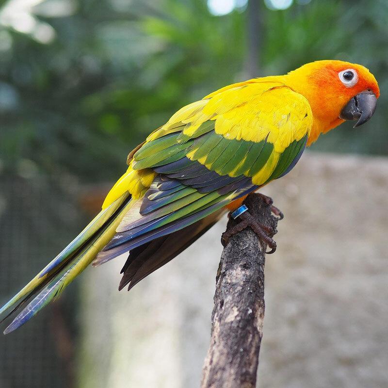

Hello and Welcome to Christians Bird Facts!
Here I will be trying to post atleast one fact about birds every week.
Our first and fact is that there are over 11000 recognized species of bird that are alive today!

Remember to help Support local bird Sanctuaries
 We will be posting sanctuaries here and rotating them out weekly to help promote donations.
We will be posting sanctuaries here and rotating them out weekly to help promote donations.Any help is greatly appreciated and supports your local experts give our feathered friends help.
Thank you for Visting!
Check back Next Week for another fact!